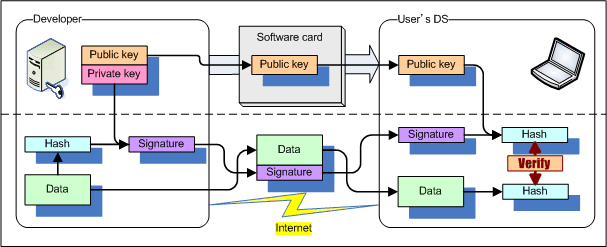

A digital signature is a mechanism that is used to verify the authenticity of data that has been received via an untrusted route such as the Internet.

Digital signatures have the following features.
In addition to the NITRO CRYPTO features for verifying digital signatures, the TWL-SDK CRYPTO library adds features for creating digital signatures.
We provide the CRYPTO_VerifySignature and CRYPTO_VerifySignatureWithHash functions for use in verifying digital signatures. We do not provide a feature for managing the expiration dates of the certificates. If necessary, implement this in the application.
We provide the CRYPTO_RSA_Sign function for creating digital signatures. This function is special in that it will not be processed even if it is run. Before running this function, you must initialize it using the CRYPTO_RSA_SignInit function; after you have created the signature, you must also shut it down using the CRYPTO_RSA_SignTerminate function.
A digital signature only verifies the legitimacy of the data. Data encryption is not performed.
The CRYPTO library provides three cryptographic algorithms: (1) RC4, which is fast but weaker in terms of its encryption strength, (2) AES, a shared-key cryptography algorithm that provides stronger encryption, and (3) RSA, a public-key cryptography algorithm that is advantageous in terms of key distribution. Refer to RC4 Algorithm Overview for more about RC2 and RSA Algorithm Overview for more about RSA.
We have also prepared AES encryption functionality for TWL-SDK, which uses hardware features. For details, see the items about AES.
Although the digital signature verification feature works for NITRO and TWL, due to licensing issues, the digital signature creation feature works only on TWL.
Signature data passed to the CRYPTO_VerifySignature* functions can be created using any method as long as it satisfies the following conditions. (It goes without saying that you can also use signature data that was created with the CRYPTO_RSA_Sign function.)
The following is an example of the procedure for generating a digital signature with OpenSSL from the open source SSL tool kit.
1. Generate an RSA Key for the Signature
Type the following command in the command-line interface of the OpenSSL environment to generate privkey.pem, a 1024-bit RSA key file.
> openssl genrsa -out privkey.pem 1024If this file were leaked, anyone would be able to sign data with it. The private key file therefore needs to be maintained with the strictest care.
Password-based encryption for privkey.pem is possible by specifying the encryption method when generating the key. In the following example, a newly generated privkey.pem file is encrypted with the 3DES algorithm.
> openssl genrsa -des3 -out privkey.pem 1024
For more information, see the openssl reference.
2. Confirm the Content of the RSA Key
Use the following command to confirm the content of privkey.pem.
> openssl rsa -in privkey.pem -text -noout
The output includes the private information needed for signing and two additional public key values needed for verification: modulus and publicExponent.
The following is an example of extracted modulus and publicExponent values output from the command.
modulus:
00:eb:95:be:33:19:73:64:f2:72:2c:87:c8:0a:f3:
1c:ba:e0:4c:e0:3e:1d:f6:e2:09:aa:70:f0:b3:b9:
0c:86:36:62:2d:12:13:86:fa:a5:3d:93:cb:5f:0b:
45:64:9b:7b:eb:b5:c6:f9:42:99:70:46:f3:14:6d:
8f:f9:b9:ec:38:30:a0:1c:28:0d:30:d9:86:1a:4d:
1b:f2:e9:05:1b:43:06:b2:c0:55:ed:c4:bb:8e:1a:
a5:ab:2b:54:e5:dc:8d:70:cf:af:91:94:c9:e9:8f:
7f:9f:29:28:be:e7:01:b0:20:d4:f2:71:58:93:db:
25:1c:26:bc:98:f3:a2:b3:47
publicExponent: 65537 (0x10001)
The public exponent used by the CRYPTO_VerifySignature* function is 65537. Confirm that publicExponent has a value of 65537.
The modulus value can also be generated with the following command.
> openssl rsa -in privkey.pem -modulus -nooutThis command outputs a text string similar to the following.
Modulus=EB95BE33197364F2722C87C80AF31CBAE04CE03E1DF6E209AA70F0B3B90C8636622D121386FAA53D93CB5F0B45649B7BEBB5C6F942997046F3146D8FF9B9EC3830A01C280D30D9861A4D1BF2E9051B4306B2C055EDC4BB8E1AA5AB2B54E5DC8D70CFAF9194C9E98F7F9F2928BEE701B020D4F2715893DB251C26BC98F3A2B347
The hexadecimal value following Modulus= must be converted to a u8 array in C and passed as mod_ptr to the CRYPTO_VerifySignature* functions. In the previous example, the modulus is 127 bytes in length because the leading zeros are omitted when the length is less than 128 bytes. When passing the value to mod_ptr, be sure to restore any leading zeros to maintain a length of 128 bytes.
3. Generate a Digital Signature
Once the above steps are complete, simply create a digital signature for the target data.
With TWL, the digital signature can be created using the CRYPTO_RSA_Sign function. It can also be created on a computer.
The following command uses the privkey.pem private key to generate signed data (hoge.sign) from the unencrypted data (hoge.txt).
> openssl dgst -sha1 -sign privkey.pem -out hoge.sign hoge.txt
Confirm that the resulting file size is 128 bytes.
This 128-byte binary data is transferred to a DS and passed to the CRYPTO_VerifySignature* function as sign_ptr.
Run the following command to confirm on the computer whether the generated signed data forms a valid digital signature.
> openssl dgst -sha1 -prverify privkey.pem -signature hoge.sign hoge.txt4. Verifying Digital Signatures
By embedding public key data in a DS program in advance, it can then receive data and digital signature data. To verify a digital signature, the CRYPTO_VerifySignature* functions require the data and the data size, the digital signature data (128 bytes), and the embedded public-key data (the 128-byte modulus). The return value is TRUE if the data is determined to be valid.
2008/10/02 Revised the key format.
2008/09/16 Revised some comments.
2008/04/18 Added support for the addition of a electronic signature creation function.
2008/03/27 Initial TWL-SDK migration version.
2006/03/07 Initial version (NITRO CRYPTO).
CONFIDENTIAL